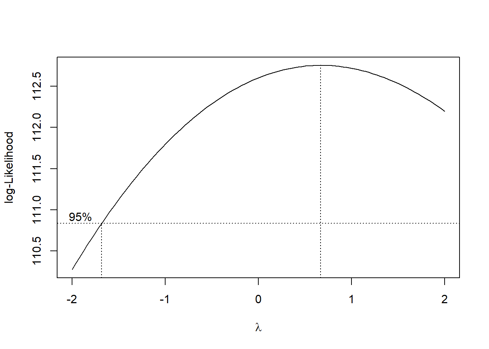
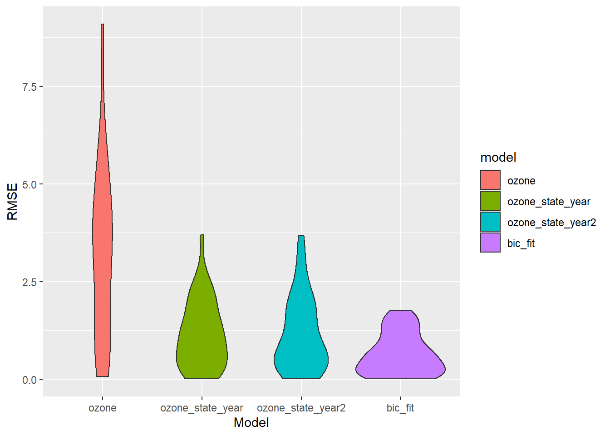

Regression Analyses
Jesse R. Ames
12/6/2021
Data
library(tidyverse)## -- Attaching packages --------------------------------------- tidyverse 1.3.1 --## v ggplot2 3.3.5 v purrr 0.3.4
## v tibble 3.1.4 v dplyr 1.0.7
## v tidyr 1.1.3 v stringr 1.4.0
## v readr 2.0.1 v forcats 0.5.1## -- Conflicts ------------------------------------------ tidyverse_conflicts() --
## x dplyr::filter() masks stats::filter()
## x dplyr::lag() masks stats::lag()outcomes_state <- read_csv("data/lc_mel_asthma_state.csv")## Rows: 210 Columns: 4## -- Column specification --------------------------------------------------------
## Delimiter: ","
## chr (2): state, outcome
## dbl (2): year, age_adjusted_incidence_rate##
## i Use `spec()` to retrieve the full column specification for this data.
## i Specify the column types or set `show_col_types = FALSE` to quiet this message.outcomes_county <- read_csv("data/lc_mel_asthma_county.csv")## Rows: 642 Columns: 5## -- Column specification --------------------------------------------------------
## Delimiter: ","
## chr (3): state, county, outcome
## dbl (2): age_adjusted_incidence_rate, fips##
## i Use `spec()` to retrieve the full column specification for this data.
## i Specify the column types or set `show_col_types = FALSE` to quiet this message.ap_uv <- read_csv("ap/ap_uv/apuv.csv")## Rows: 14912 Columns: 19## -- Column specification --------------------------------------------------------
## Delimiter: ","
## chr (3): county, state, season
## dbl (16): year, countyfips, pm25_max_pred, pm25_med_pred, pm25_mean_pred, pm...##
## i Use `spec()` to retrieve the full column specification for this data.
## i Specify the column types or set `show_col_types = FALSE` to quiet this message.#State-level analysis - fewer predictors
ap_uv_state_slim <- ap_uv %>%
select(-c(countyfips, county,
pm25_max_pred, pm25_mean_pred, pm25_pop_pred,
o3_max_pred, o3_mean_pred, o3_pop_pred,
i310, i305, i380, edr)) %>%
group_by(state, year, season) %>%
#Take medians across county for each season
summarize(across(pm25_med_pred:edd, median)) %>%
pivot_wider(names_from = season, values_from = pm25_med_pred:edd)## `summarise()` has grouped output by 'state', 'year'. You can override using the `.groups` argument.#State-level analysis - more predictors
ap_uv_state <- ap_uv %>%
select(-c(countyfips, county)) %>%
group_by(state, year, season) %>%
#Take medians across county for each season
summarize(across(pm25_max_pred:i380, median)) %>%
pivot_wider(names_from = season, values_from = pm25_max_pred:i380)## `summarise()` has grouped output by 'state', 'year'. You can override using the `.groups` argument.outcomes_wider_state <- outcomes_state %>%
pivot_wider(names_from = outcome, values_from = age_adjusted_incidence_rate)
state_analysis <- left_join(outcomes_wider_state, ap_uv_state_slim)## Joining, by = c("state", "year")#Check for correlations
state_analysis_corr <- state_analysis %>%
select(`lung cancer`:edd_Winter) %>%
do(as.data.frame(cor(., method="pearson", use="pairwise.complete.obs")))Lung Cancer
Exploration
state_plot <- state_analysis %>%
ggplot(aes(x = year, y = `lung cancer`, group = state, color = state)) +
geom_path()
spring_plot <- state_analysis %>%
ggplot(aes(x = o3_med_pred_Spring, y = `lung cancer`, group = state, color = state)) +
geom_point()
summer_plot <- state_analysis %>%
ggplot(aes(x = o3_med_pred_Summer, y = `lung cancer`, group = state, color = state)) +
geom_point()
fall_plot <- state_analysis %>%
ggplot(aes(x = o3_med_pred_Fall, y = `lung cancer`, group = state, color = state)) +
geom_point()
library(patchwork)
(state_plot + spring_plot) / (summer_plot + fall_plot)## Warning: Removed 1 row(s) containing missing values (geom_path).## Warning: Removed 48 rows containing missing values (geom_point).
## Warning: Removed 48 rows containing missing values (geom_point).
## Warning: Removed 48 rows containing missing values (geom_point).Model Fit
We proceed using the BIC criterion working forwards from 2001 to 2015
state_2001_2015 <- state_analysis %>%
filter(year %in% 2001:2015) %>%
#exclude asthma, lots of missingness
select(-asthma)
fit <- lm(`lung cancer` ~ ., data = state_2001_2015)
step_bic <- step(fit, trace = 0, k = log(nobs(fit)), direction = "backward")
summary(step_bic)##
## Call:
## lm(formula = `lung cancer` ~ state + year + o3_med_pred_Fall +
## o3_med_pred_Spring + o3_med_pred_Summer + edd_Fall + edd_Spring +
## edd_Summer, data = state_2001_2015)
##
## Residuals:
## Min 1Q Median 3Q Max
## -1.86021 -0.31495 0.07269 0.50707 0.95704
##
## Coefficients:
## Estimate Std. Error t value Pr(>|t|)
## (Intercept) 2.189e+03 1.691e+02 12.940 4.84e-12 ***
## stateOH 9.401e+00 9.229e-01 10.187 5.38e-10 ***
## statePA 4.342e+00 5.918e-01 7.337 1.83e-07 ***
## year -1.055e+00 8.429e-02 -12.515 9.51e-12 ***
## o3_med_pred_Fall -3.092e-01 1.464e-01 -2.111 0.0458 *
## o3_med_pred_Spring -2.527e-01 1.196e-01 -2.114 0.0456 *
## o3_med_pred_Summer -2.127e-01 9.596e-02 -2.217 0.0368 *
## edd_Fall 4.640e-03 1.720e-03 2.699 0.0128 *
## edd_Spring 2.132e-03 9.207e-04 2.315 0.0299 *
## edd_Summer 3.625e-03 2.160e-03 1.678 0.1068
## ---
## Signif. codes: 0 '***' 0.001 '**' 0.01 '*' 0.05 '.' 0.1 ' ' 1
##
## Residual standard error: 0.766 on 23 degrees of freedom
## (12 observations deleted due to missingness)
## Multiple R-squared: 0.9842, Adjusted R-squared: 0.978
## F-statistic: 158.9 on 9 and 23 DF, p-value: < 2.2e-16Am I reading that right? \(R^2\) of 0.98! That sounds too good to be true. Let’s look at some diagnostic plots.
lung_fit <- state_2001_2015 %>%
modelr::add_residuals(step_bic) %>%
modelr::add_predictions(step_bic)
lung_fit %>%
ggplot(aes(x = pred, y = resid)) + geom_point() + labs(x = "Predicted value", y = "Residual")## Warning: Removed 12 rows containing missing values (geom_point).
Residuals appear to have a slight upward curvature overall. What variables are driving this?
spring_resid <- lung_fit %>%
ggplot(aes(x = o3_med_pred_Spring, y = resid)) + geom_point() + labs(x = "Spring Median O3",
y = "Residual")
summer_resid <- lung_fit %>%
ggplot(aes(x = o3_med_pred_Summer, y = resid)) + geom_point() + labs(x = "Summer Median O3", y = "Residual")
fall_resid <- lung_fit %>%
ggplot(aes(x = o3_med_pred_Fall, y = resid)) + geom_point() + labs(x = "Fall Median O3", y = "Residual")
state_resid <- lung_fit %>%
ggplot(aes(x = state, y = resid)) + geom_violin() + labs(x = "State", y = "Residual")
(spring_resid + summer_resid) / (fall_resid + state_resid)## Warning: Removed 12 rows containing missing values (geom_point).
## Warning: Removed 12 rows containing missing values (geom_point).
## Warning: Removed 12 rows containing missing values (geom_point).## Warning: Removed 12 rows containing non-finite values (stat_ydensity).Hm…
plot(step_bic, which = 2)
Normality assumption doesn’t look so great.
plot(step_bic, which = 5)
Datapoint number 28 is a borderline outlier.
Cross validation
What happens if we crossvalidate against simpler models? I suspect we are overfit. We will use leave-one-out cross-validation.
library(modelr)
set.seed(15)
cv_df <- crossv_loo(state_2001_2015)
cv_df <- cv_df %>%
mutate(
#Ozone only
ozone = map(train, ~lm(`lung cancer` ~ o3_med_pred_Spring + o3_med_pred_Summer +
o3_med_pred_Fall, data = .x)),
#Ozone with year and state
ozone_state_year = map(train, ~lm(`lung cancer` ~ o3_med_pred_Spring + o3_med_pred_Summer +
o3_med_pred_Fall + year + state, data = .x)),
#Ozone with year and state with time interactions
ozone_state_year2 = map(train, ~lm(`lung cancer` ~ year*(o3_med_pred_Spring +
o3_med_pred_Summer +
o3_med_pred_Fall) + year + state +
year*state, data = .x)),
#BIC model
bic_fit = map(train, ~lm(`lung cancer` ~ state + year + o3_med_pred_Fall +
o3_med_pred_Spring + o3_med_pred_Summer + edd_Fall + edd_Spring +
edd_Summer, data = .x))) %>%
mutate(
rmse_ozone = map2_dbl(ozone, test, ~rmse(model = .x, data = .y)),
rmse_ozone_state_year = map2_dbl(ozone_state_year, test, ~rmse(model = .x, data = .y)),
rmse_ozone_state_year2 = map2_dbl(ozone_state_year2, test, ~rmse(model = .x, data = .y)),
rmse_bic_fit = map2_dbl(bic_fit, test, ~rmse(model = .x, data = .y)))
cv_df %>%
select(starts_with("rmse")) %>%
pivot_longer(
everything(),
names_to = "model",
values_to = "rmse",
names_prefix = "rmse_") %>%
mutate(model = fct_inorder(model)) %>%
ggplot(aes(x = model, y = rmse)) + geom_violin() + labs(x = "Model", y = "RMSE")## Warning: Removed 12 rows containing non-finite values (stat_ydensity).
In retrospect, this model really isn’t appropriate for these data - this is a time series. We should probably include time interaction effects, and maybe use generalized least squares. Also cross-validation with a rolling window is probably better. But still, somehow including EDD makes the model better for some reason??